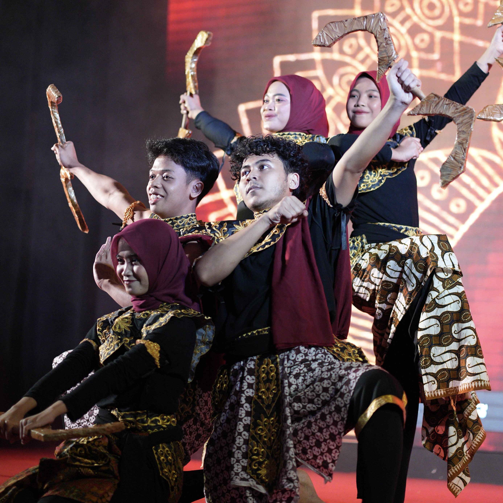
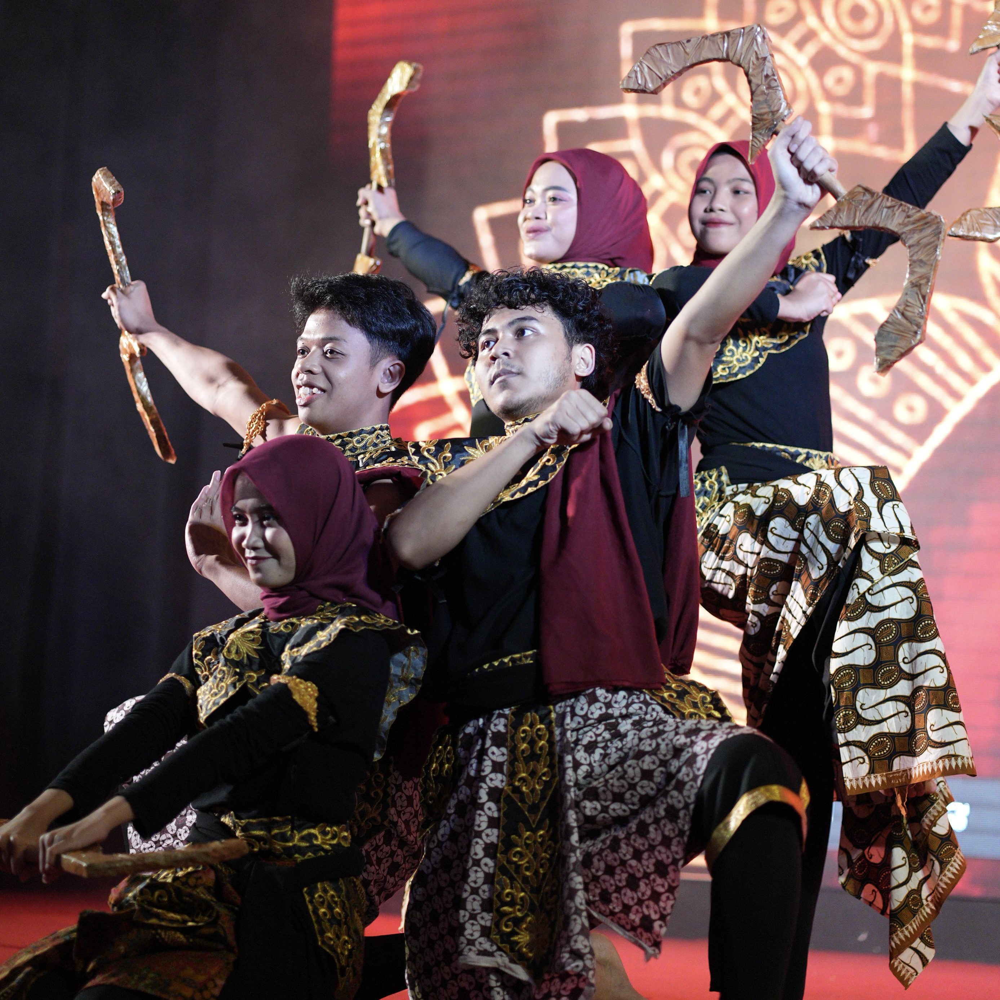

APA ITU SANGGAR?
Sanggar Budaya adalah ruang bagi mahasiswa yang mencintai seni tradisional Indonesia, seperti tari, musik daerah, dan teater. Melalui suasana kreatif dan kolaboratif, sanggar ini menjadi tempat belajar dan berkarya sekaligus melestarikan budaya. Setiap penampilan menghadirkan tarian dan pertunjukan dari berbagai daerah, memberi kesempatan bagi mahasiswa untuk mengekspresikan bakat serta memperkenalkan kekayaan budaya Indonesia kepada kampus dan masyarakat.
DAFTAR KESENIAN
Sanggar Budaya menampilkan berbagai tarian dan kesenian khas dari banyak daerah Indonesia. Untuk membuat pertunjukan lebih segar dan sesuai perkembangan zaman, para penari sering memadukan unsur tradisional dengan gaya modern. Perpaduan ini menghasilkan karya yang unik dan tetap berakar pada nilai budaya, sekaligus menarik bagi penonton dan memperkenalkan budaya Indonesia dalam bentuk yang lebih kontemporer.
DOKUMENTASI


 
